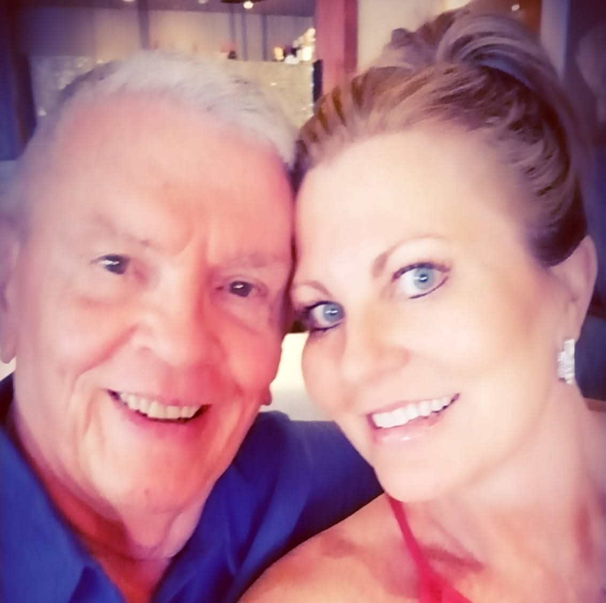
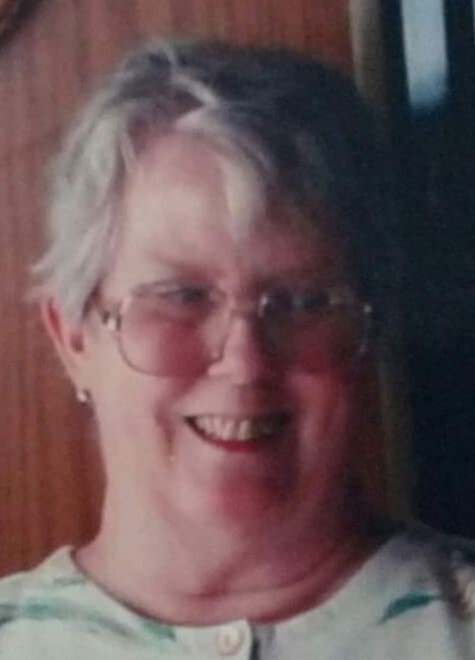
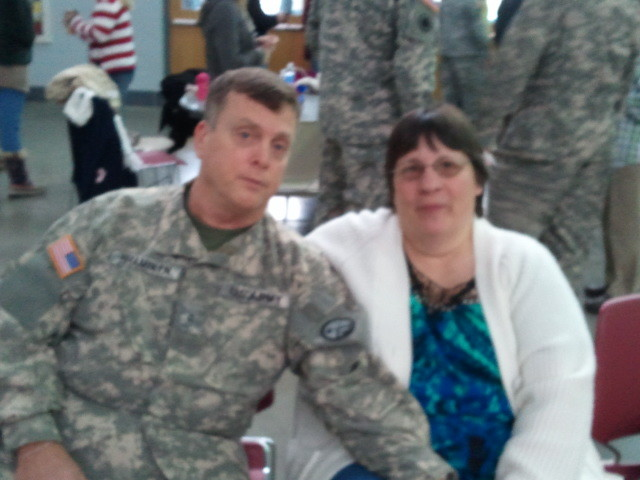

Lowell Harold Shamblen
Born 18 December 1935, Fairplain, West Virginia
Quick Facts
Immediate Family
Parents
- Arvel Lawrence Shamblin (1909–2001)
- Georgia Mae Fisher (1909–1988)
Spouses
- Helen Claire Powell (6 August 1935 – 15 October 2005; married 18 December 1953)
- Evelyn Majors (died 25 March 2020)
Children
- David Lowell Shamblen (born 3 October 1956)
- Donald Gene Shamblen (born 5 March 1959)
- Lisa Karen Mountcastle (born 9 June 1962)
Siblings
- Lawrence Richard Shamblen (1932–1968)
- Betty Carolyn Shircliff (born 1934)
- Clifford Earl Shamblen (born 1938)
On Family Tree Sites
Couple Folder
Life Timeline
1935 · age 0
Born, Fairplain, Jackson Co., WV
1953 · age 18
Married Helen Claire Powell, Lake Mary, Florida
1956 · age 20
Son David born, Charleston, WV
1959 · age 23
Son Donald born, Charleston, WV
1962 · age 26
Daughter Lisa born, Sanford, Florida
2005 · age 69
Helen died, Lake Mary, Florida
2020 · age 84
Evelyn died, Sanford, Florida
Life Story
Lowell Harold Shamblen was born December 18, 1935, in Fairplain, Jackson County, West Virginia, the third child of Arvel Lawrence Shamblin and Georgia Mae Fisher.
He followed his older brother Richard into the Air Force and police work, and took college courses with Richard at the West Virginia State College of Technology.
He married Helen Claire Powell on December 18, 1953, in Lake Mary, Florida. Their children were David, born in 1956 in Charleston, Donald, born in 1959 in Charleston, and Lisa, born in 1962 in Sanford, Florida. Helen died in 2005 in Lake Mary. Lowell later married Evelyn Majors. Evelyn’s 2020 obituary identifies Lowell as her husband and calls Lisa, David, and Donald his stepchildren; it does not state their marriage date. The current source set does not independently establish Lowell’s present living status, so none is asserted here.
On the 1944 family portrait, Lowell himself commented: "I am the good looking one front center."
Photo Gallery










Sources and Evidence
Living status confirmed by Rick, 19 November 2026.
- Geni, read 2026-11-03: Lowell Harold Shamblen profile, spouses, children, and parents
- Dignity Memorial obituary for Evelyn Mae Shamblen, 11 November 2020: explicitly identifies husband Lowell Shamblen; names “step children” Lisa Mountcastle, David Shamblen, and Donald Shamblen. This independently supports Evelyn as Lowell’s wife and the stepfamily relationship as phrased by the obituary. It does not provide a marriage date or establish his living status today. ( obituary wording)
- FamilySearch, read 2026-11-03: Lowell Shamblen, PN3J-N81, birth 18 December 1935, Fairplain
- WikiTree: Lowell Shamblen-48, son of Arvel Shamblin-435 and Georgia Fisher-24678
- Ancestry, the ’s Brewster Family Tree: Lowell Shamblen, 162817237912
- 1940 census, Ripley District, Jackson County, West Virginia (household of Arvel and Georgia)
- Lawrence × Ruth couple profile: Lowell followed Richard into the Air Force and police work; college courses with Richard
- Lowell Shamblen's own comment on the 1944 family portrait
Research Notes and Open Questions
- Living status confirmed by Rick, 19 November 2026. No current address or other private details are published. No death date is listed.
- FamilySearch supplies Fairplain as Lowell's birthplace; the Ancestry profile on the ’s tree leaves the birthplace blank.
DNA
No DNA matches linked yet.
Family Notes
No family-notes link is listed on this profile.
Profile history: Created 3 November 2026 from Geni, Ancestry, WikiTree, and FamilySearch profiles and family notes.